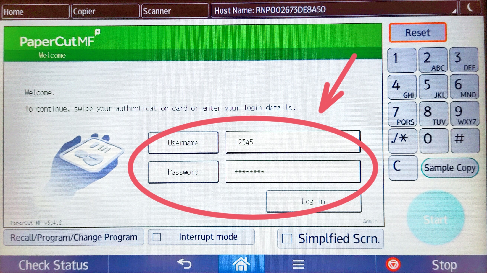
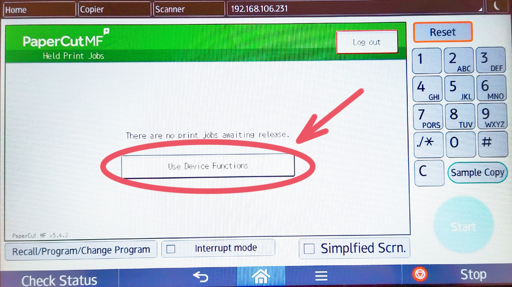
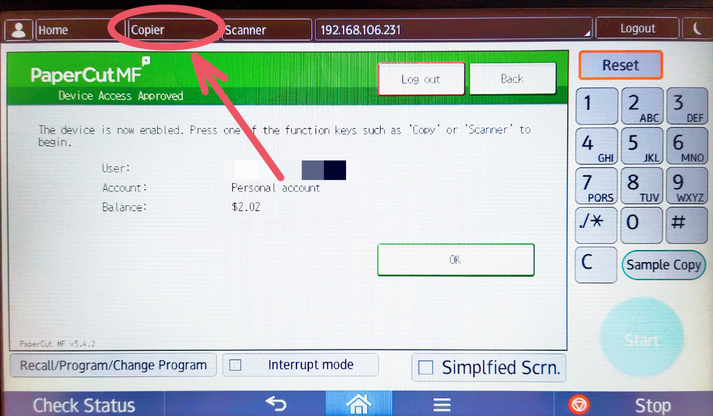
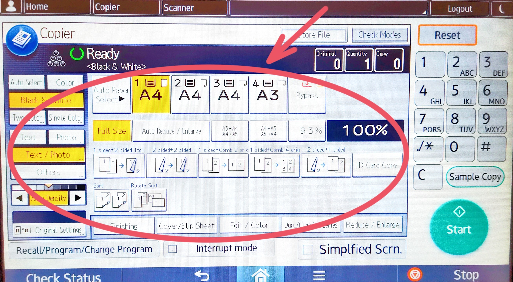
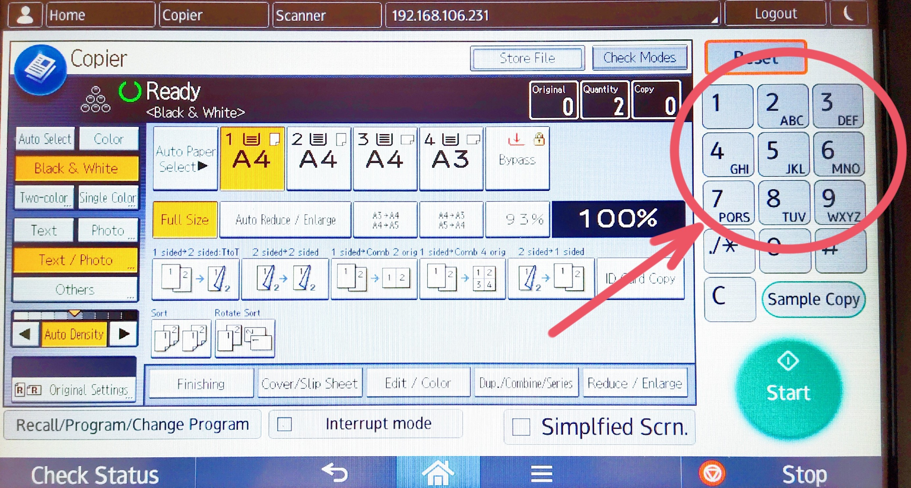
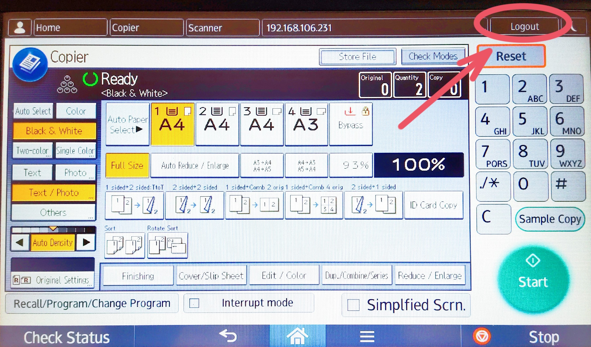

Photocopy is a very useful function of our school printer. Here are the instructions on how to photocopy:
1. Swipe your ID card or login via your username and password

2. Select “Use Device Functions”

3. Select “Copier” at the top of the screen

4. Place your document on the top left corner of the glass

5. Change the settings (colours, paper size, etc) if needed

6. Enter the number of copies using the numbers on the keyboard

8. Don’t forget to LOGOUT once you have finished!
